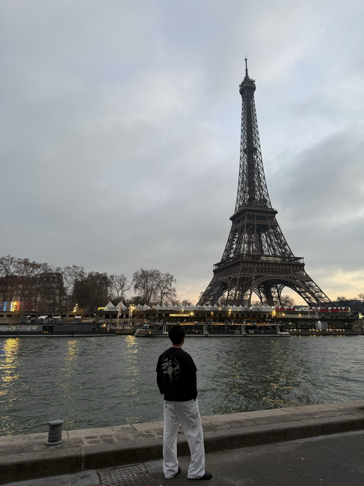
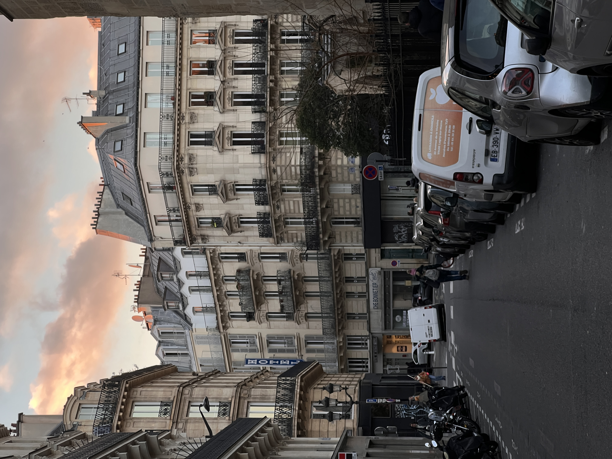
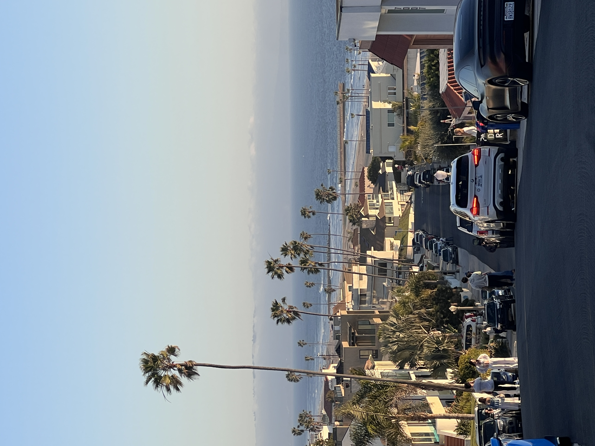
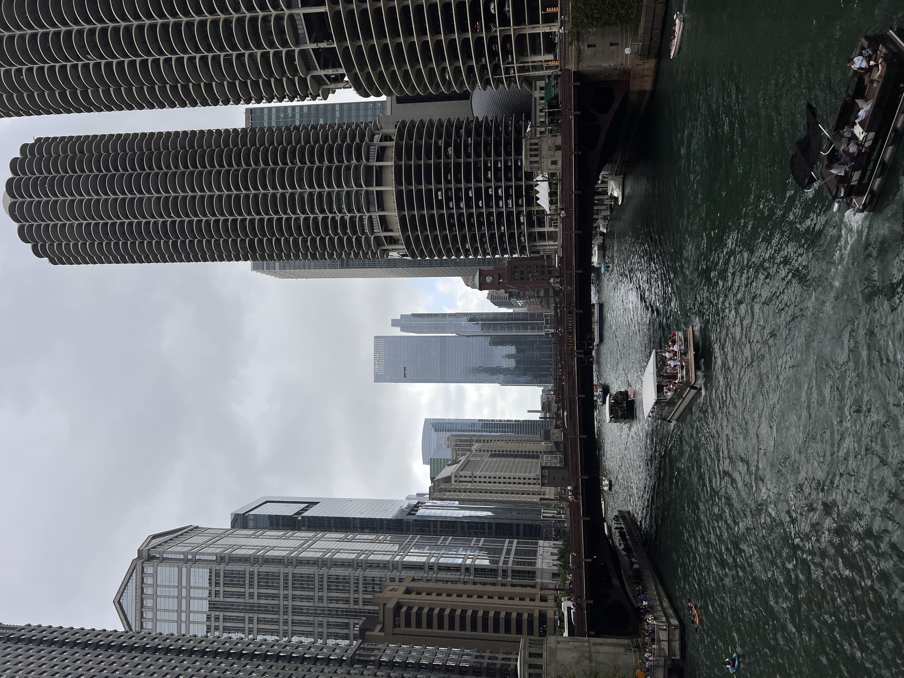

London
Grey skies, red buses, and quiet corners of the city.
View GalleryHi, I’m
I like wandering around cities I don’t know very well and taking pictures of whatever catches my eye. Nothing fancy, just light, people, and random street moments. Here are some shots from four cities I’ve visited so far.
Get to know me

Hey, I’m Jintian Su. I’m a computer science student, but in my free time I like walking around with a camera. I started a few years ago just to have better memories of my trips, and now it’s turned into a real hobby.
I don’t really have a specific style or expensive gear. I just like paying attention to good light and small moments when I’m somewhere new. So far I’ve taken photos in London, Paris, Los Angeles, and Chicago.
Candid moments and everyday city life
Lines, symmetry, and skylines
Friends, strangers, and quiet moments
Sunsets, skylines, and wide-open views
A few cities I’ve shot in
Grey skies, red buses, and quiet corners of the city.
View Gallery
Golden light, narrow streets, and quiet cafés.
View Gallery
Palm trees, wide streets, and warm evening light.
View Gallery
Skyline views, lake winds, and city grid streets.
View GalleryA few of my favorite shots
A short clip from my trips so far
Have a photo tip, or just want to say hi?
I spent a week wandering the city with no real itinerary, just following whatever light or street looked interesting. Mostly shot around the South Bank, Shoreditch, and the Underground.
Early mornings before the streets got crowded, chasing golden light through narrow alleyways and quiet cafés. Still my favorite city to shoot so far.
Wide streets, palm trees, and that famous evening light. Spent most of my time shooting around Venice Beach and Downtown LA.
Skyline views, lake winds, and a city grid that’s surprisingly fun to shoot. Riverwalk at sunset was easily the highlight.